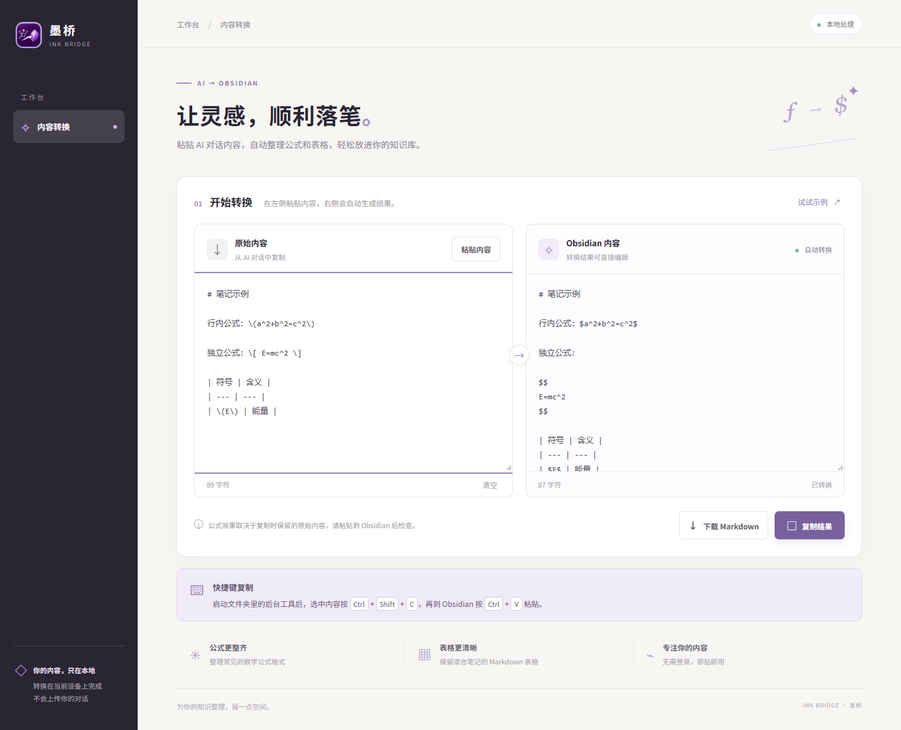

公式，清晰呈现
整理常见的数学公式格式，尽量提取复制内容中保留的公式源码。
复制一段有公式的对话，不必再从头调整格式。墨桥帮你完成整理，然后继续你的思考。
整理常见的数学公式格式，尽量提取复制内容中保留的公式源码。
把常见表格转换成 Markdown，文字、公式和思路一起保留下来。
选中内容后按下快捷键，等待转换完成，即可粘贴到 Obsidian。
需要看一眼结果？打开转换界面，即时预览、编辑，再复制或下载 Markdown。

从复制到粘贴，几步就能开始。也可以随时打开界面，手动预览和调整。
下载便携包，完整解压后双击“墨桥.exe”。首次运行会为当前 Windows 用户启用开机自启。
在 AI 对话中选中内容，按 Ctrl + Shift + C，等待转换完成提示。
打开 Obsidian，按 Ctrl + V 粘贴。检查公式和表格，继续整理。
✳ 右键任务栏通知区域的墨桥图标，可重新打开界面或关闭开机自启。
为你的知识整理，留一点空间。
不同 AI 平台的复制格式可能不同。若原文未保留公式源码，或包含复杂表格、图片等内容，结果可能需要手动调整。建议在 Obsidian 中检查显示效果。